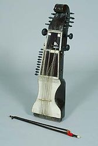

There are different versions for the meaning and origins of "sarangi" The
word "sarangi" could be a combination of two sanskrit words: "saar" (summary)
and "ang" (form, herein different styles of playing instrumental music
For e.g.
"gayaki ang") hence meaning the instrument that can summarize every style of
music or playing."Sarang" in fact has a number of meanings in Sanskrit.
According to some musicians, the word sarangi is a combination of two words
‘seh’(Persian equivalent of three) and ‘rangi’ (Persian equivalent of colored)
corrupted as sarangi.
The term seh-rangi represents the three melody strings.
However the most common folk etymology is that sarangi is derived from 'sol
rang'(a hundred colours) indicating its adaptability to many styles of vocal
music, its flexible tunability, and its ability to produce a large palette of
tonal colour and emotional nuance.
The repertoire of sarangi players is traditionally very closely related to vocal
music. Nevertheless, a concert with a solo sarangi as the main item will
sometimes include a full-scale raag presentation with an extensive alap (the
unmeasured improvisatory development of the raga) in increasing intensity
(alap-jor-jhala) and several compositions in increasing tempi called bandish. As
such, it could be seen as being on a par with other instrumental styles such as
sitar, sarod, and bansuri.

Sarangi music is often vocal music. It is rare to find a sarangi player who does
not know the words of many classical compositions. The words are usually
mentally present during performance, and performance almost always adheres to
the conventions of vocal performance including the organisational structure, the
types of elaboration, the tempo, the relationship between sound and silence, and
the presentation of khyal and thumri compositions.
The vocal quality of sarangi
is in a quite separate category from, for instance, the so-called gayaki-ang of
sitar which attempts to imitate the nuances of khyal while overall conforming to
the structures and usually keeping to the gat compositions of instrumental
music. (A gat is a composition set to a cyclic rhythm.)
The sarangi is also a traditional stringed musical instrument of Nepal, commonly
played by the Gaine or Gandarbha ethnic group but the form and repertoire of
sarangi is more towards the folk music as compared to the heavy and classical
form of repertoire in India.
Structure:
Carved from a single block of tun (red cedar) wood, the sarangi has a box-like
shape with three hollow chambers: pet (stomach), chaati (chest) and magaj
(brain). It is usually around 2 feet (0.61 m) long and around 6 inches (150 mm)
wide though it can vary as there are smaller as well as larger variant sarangis
as well.
The lower resonance chamber or pet is covered with parchment made out
of goat skin on which a strip of thick leather is placed around the waist (and
nailed on the back of the chamber) which supports the elephant-shaped bridge
that is made of camel or buffalo bone usually (made of ivory or Barasingha bone
originally but now that is rare due to the ban in India). The bridge in turn
supports the huge pressure of approximately 35–37 sympathetic steel or brass
strings and three main gut strings that pass through it.
The three main playing
strings – the comparatively thicker gut strings – are bowed with a heavy
horsehair bow and "stopped" not with the finger-tips but with the nails,
cuticles and surrounding flesh. (talcum powder is applied to the fingers as a
lubricant). The neck has ivory/bone platforms on which the fingers slide. The
remaining strings are resonance strings or tarabs, numbering up to around 35–37,
divided into 4 "choirs" having two sets of pegs, one on the right and one on the
top. On the inside is a chromatically tuned row of 15 tarabs and on the right a
diatonic row of 9 tarabs each encompassing a full octave plus 1–3 extra notes
above or below that.
Both these sets of tarabs pass from the main bridge to the
right side set of pegs through small holes in the chaati supported by hollow
ivory/bone beads. Between these inner tarabs and on the either side of the main
playing strings lie two more sets of longer tarabs, with 5–6 strings on the
right set and 6–7 strings on the left set. They pass from the main bridge over
to two small, flat and wide table like bridges through the additional bridge
towards the second peg set on top of the instrument.
These are tuned to the
important tones (swaras) of the raga. A properly tuned sarangi will hum and cry
and will sound like melodious meowing, with tones played on any of the main
strings eliciting echo-like resonances. A few sarangis use strings manufactured
from the intestines of goats these harken back to the days when rich musicians
could afford such strings.
Makers:
Tabla Sitar Musicals (Delhi)
Masita (Meerut)
Behra (Meerut)
Rajesh Dhawan (Meerut)
Raj Musicals (New Delhi)
Krishna Gopal Manandhar (Nepal)
Modern performers who have used sarangi in compositions:
A. R. Rahman for the song "Tum Ko" performed by Kavita Krishnamurthy in the
feature film Rockstar Sarangi played by Dilshad Khan.
Yuvan Shankar Raja for the song "Yogi theme in saarangi" in his 2009 film
"Yogi", performed by "Ustad Sultan Khan".
Hiphop Tamizha for the song "Indru Netru Naalai" in "Indru Netru Naalai".
Anirudh for the song "Neeyum Naanum" in Naanum Rowdy Dhaan 2015 film, performed
by "Manonmani".
Aerosmith, sarangi parts performed by Ramesh Mishra (featured on the track
"Taste of India" from the 1997 album Nine Lives)
Surinder Sandhu, The Fictionist with The Royal Liverpool Philharmonic Orchestra,
SauRango Orchestra with Steve Vai and Cycles and Stories.
Cheb i Sabbah
Def Leppard in "Turn to Dust" from 1996 album Slang (album)
Howard Shore (the Lothlórien portions of the score for The Fellowship of the
Ring)
Nitin Sawhney
Robert Miles (on his 2001 album Organik)
Secret Chiefs 3
Steve Shelley of Sonic Youth
Tabla Beat Science
Tool (featured on the track "Reflection")
Talvin Singh
Robin Williamson of the Incredible String Band (notably in the song White Bird
on the Changing Horses album)
Blind Melon's track Sleepyhouse from their debut album Blind Melon
Laage Re Nain Coke Studio Season 6
Pagal [Coke Studio] Season 6 -Winit Tikko band Sarangi By Sharukh Khan
Ram Narayan
Aruna Narayan
Jon Foreman of Switchfoot for the song "She Said" on his 2015 solo EP, The
Wonderlands: Darkness
Ahsan Ali (National Anthem on Sarangi )